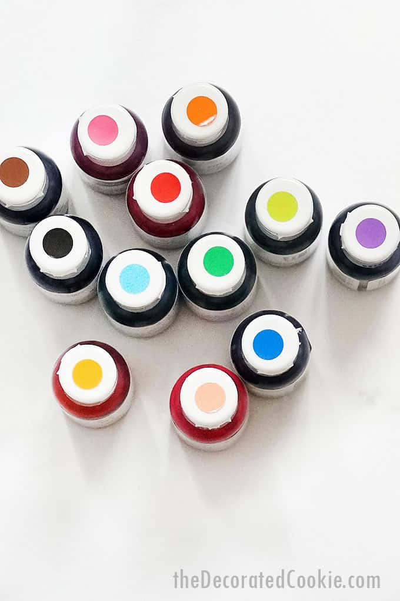
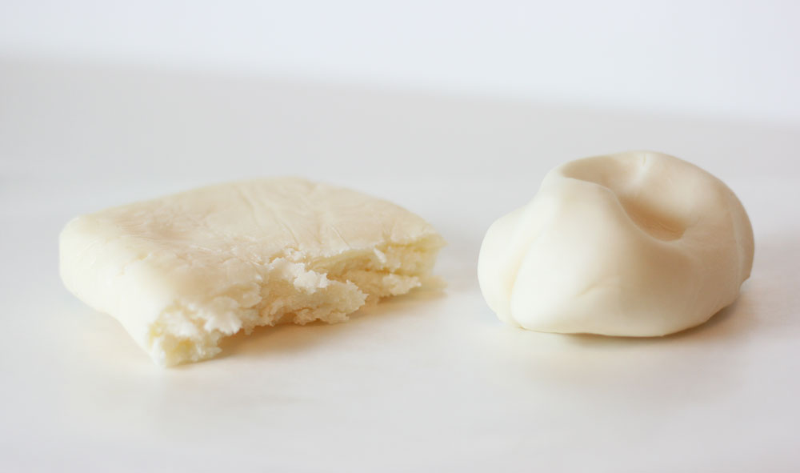

Food ColoringAll about that base no trouble let’s explore the differences between gel and oil-based varieties. Have you ever wondered why certain recipes call for one type over the other? Let’s start with gel food colors, the go-to choice for many bakers. These colors are vibrant, highly concentrated, and come in a rainbow of shades. One of the biggest advantages of gel colors is their versatility. They’re fantastic for tinting icings, frostings, and other water-based mixtures without altering the consistency too much. Gel colors are also perfect for achieving those intense hues in delicate desserts like macarons and meringues, where any additional liquid could throw off the recipe. Now, let’s talk oil-based food colors. These colors are oil-soluble and work wonders when you need to tint chocolate or candy coatings. The oil in these colors keeps your chocolates glossy and beautiful. Oil-based colors are a lifesaver when you’re crafting those stunning chocolate drips or working with candy melts for cake pops. Plus, they’re the secret weapon for creating intricate details on fondant and marzipan decorations. Food Coloring really is all about that base if you mix oil based with a butter rich meringue they will split while the oil based with modeling chocolate also won’t blend as consistently.FrostingFrosting is a sweet, spreadable topping used to decorate and fill desserts. It typically combines butter and sugar, whipped together until a light and fluffy texture is achieved. This sweet spread adds a finishing touch to cakes, cookies and pastries and can be flavored and customized to your taste. Frosting ingredients vary by recipe and the type of frosting you are creating. However, frosting typically consists of sweetener, liquids like milk or egg whites and fats like butter, coconut oil, shortening or cream cheese.
There are several different types of frosting you can create and experiment with to find the right match for your favorite dessert recipe. Explore the variety of frostings below to find your new favorite recipe.
1. Swiss meringue buttercream- Swiss meringue buttercream is a luxurious and silky frosting made by creating a stable Swiss meringue from heated egg whites and granulated sugar. Gradually incorporating softened butter helps to create the smooth and velvety texture that’s perfect for adding a smooth finish to sheet or layer cakes. You can customize your Swiss meringue buttercream recipe to incorporate flavors like vanilla or melted chocolate for an extra layer of richness.
2. French buttercream- This luxurious and decadent buttercream frosting is created by whipping together egg yolks and hot sugar syrup to create a rich, silky and pale yellow mixture before whipping in softened butter. French buttercream is ideal for filling cupcakes or adding between layers of cake.
3. German buttercream- German buttercream is a velvety and creamy frosting that combines pastry cream made from milk, sugar, egg yolks and cornstarch with softened butter. This frosting has a lightly sweet, custardy flavor and is a versatile option that pairs well with a variety of cakes and pastries.
4. Cream cheese frosting- Cream cheese frosting has a rich, sweet and slightly tangy flavor, with a thick and creamy texture. Simple ingredients like butter, cream cheese and powdered sugar are combined to make this decadent frosting that is perfect for adding to red velvet cake, or carrot cake.
5. Italian buttercream- Like Swiss meringue buttercream, Italian buttercream is made by gently combining cooled meringue with softened butter to create a velvety texture. However, Italian buttercream is more stable than Swiss meringue, making it a delicious option for piping decorative designs on desserts.
6. American buttercream- American buttercream frosting is known for its versatility and simple preparation. You can easily make this type of frosting in your stand mixer by creaming together butter, powdered sugar, heavy cream and other flavors for use on cakes, cookies, brownies and cupcakes.
7. Whipped cream frosting- Whipped cream frosting is a delightful and airy recipe that elevates the simplest of desserts with its cloud-like texture and subtly sweet flavor. This frosting is made by whipping heavy cream and bloomed gelatin to stiff peaks, then gently folding in sugar and vanilla extract. This combination of ingredients creates a light sweetness and depth of flavor that complements a variety of treats, including fresh fruit salads, pies and cakes.
8. Brown-butter frosting- Brown butter frosting is rich, nutty, and caramel like made by browning butter than combining with powdered sugar, vanilla, and cream. It is an easily spreadable buttercream and can be thinned for a glaze. It pairs best with spiced cakes, pumpkin, apple, zucchini, and chocolate cakes.
9. Chocolate ganache frosting- Chocolate ganache frosting has an intense chocolate flavor that adds a level of deep richness to any dessert. This frosting recipe starts with, of course, chocolate ganache—made by mixing heated heavy cream with chopped chocolate until the chocolate melts and a silky mixture is achieved. Let the ganache cool until it is slightly firm, then whip it in your stand mixer until stiff peaks form.
10. Mascarpone buttercream- A cross between cream cheese frosting and American buttercream, mascarpone buttercream is rich and tangy because of its star ingredient: mascarpone cheese. Mascarpone is a soft, lightly sweet and spreadable cheese that is often considered the Italian sister of American cream cheese. You can use this frosting instead of cream cheese or buttercream frostings for filling and decorating cakes and cookies.
11. Ermine Frosting- Ermin frosting is by making a custard-like paste or roux. By heating flour, granulated sugar and milk together on a stove or microwave to create a thick paste. Once cooled it whips with a softened butter until light and airy. It is less sweet than American buttercream. Still stable despite being whipped cream-like.

Chocolate and MeltsCandy melts candy makes for a fun and colorful addition to your treats. Great for cake pops, cookies, molded candies and more, Candy Melts candy is just as easy to use as it is to eat!
Great for dipping, dunking, drizzling and molding, it is a fun way to decorate with or cover treats. These candy wafers are designed for easy melting and can be thinned with solid vegetable shortening for dripping.
Chocolate isn’t just a great ingredient for making the cake whether as a melted bar white, dark, milk, German chocolate or in cocoa powdered form. If you use a black cocoa you can even get a black frosting or icing without it staining your mouth and skin. You can temper chocolate on a stove before putting it in a mold.
Modeling chocolate is super versatile and used for a lot of things in the cake decorating industry. It helps when sculpting realistic elements because it works very much like clay. You can build it up, smooth out the seams more easily than even fondant because hit heats up under your palm because of the chocolate base and it holds details well. Modeling chocolate is also great to cover cake, make chocolate flowers, bows or pretty much any type of decoration.
Chocolate ganache is a rich, versatile emulsion of melted chocolate and hot cream, creating a smooth, glossy mixture used as a glaze, frosting, filling, or sauce, with its consistency determined by the chocolate-to-cream ratio, ranging from a soft, pourable drizzle to a firm, scoopable truffle base. It's made by pouring hot cream over chopped chocolate or chips and stirring until smooth, typically using heavy cream for the best texture.